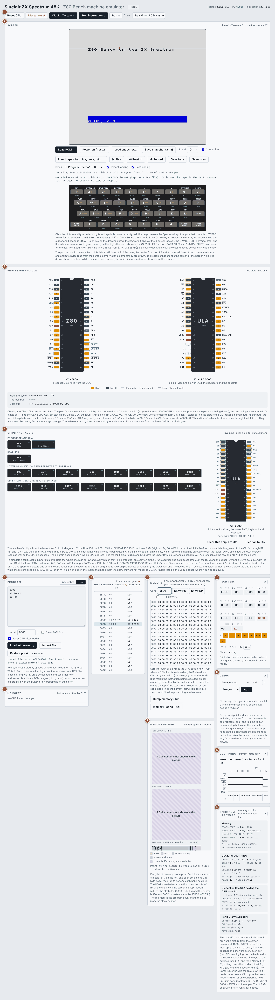
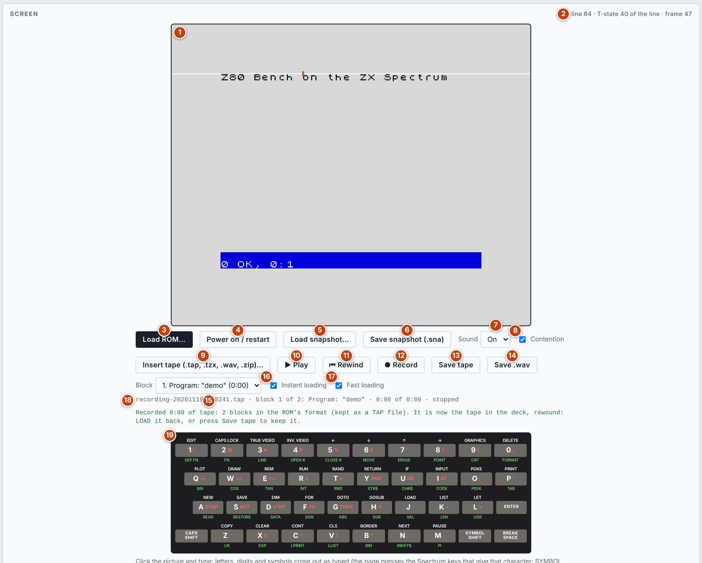
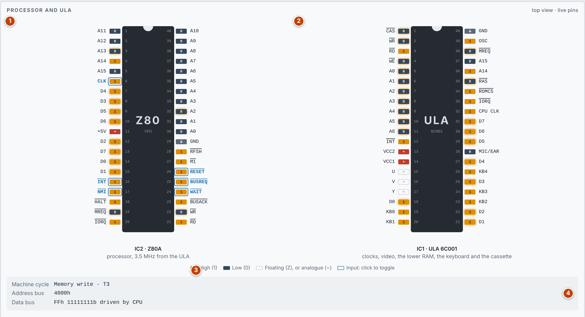
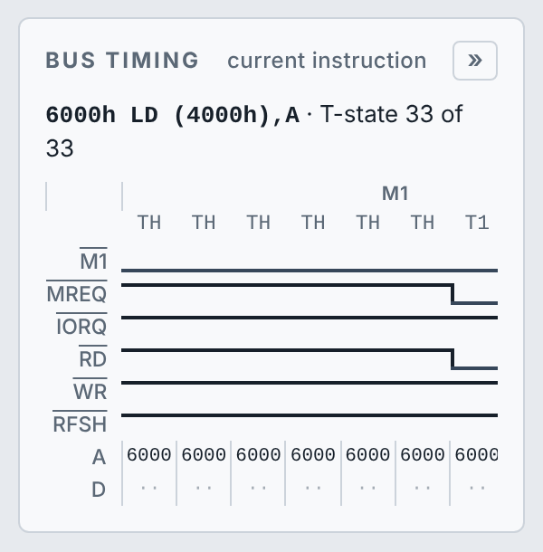
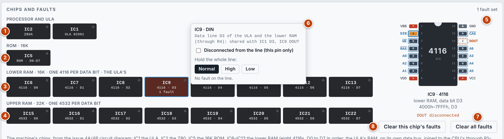
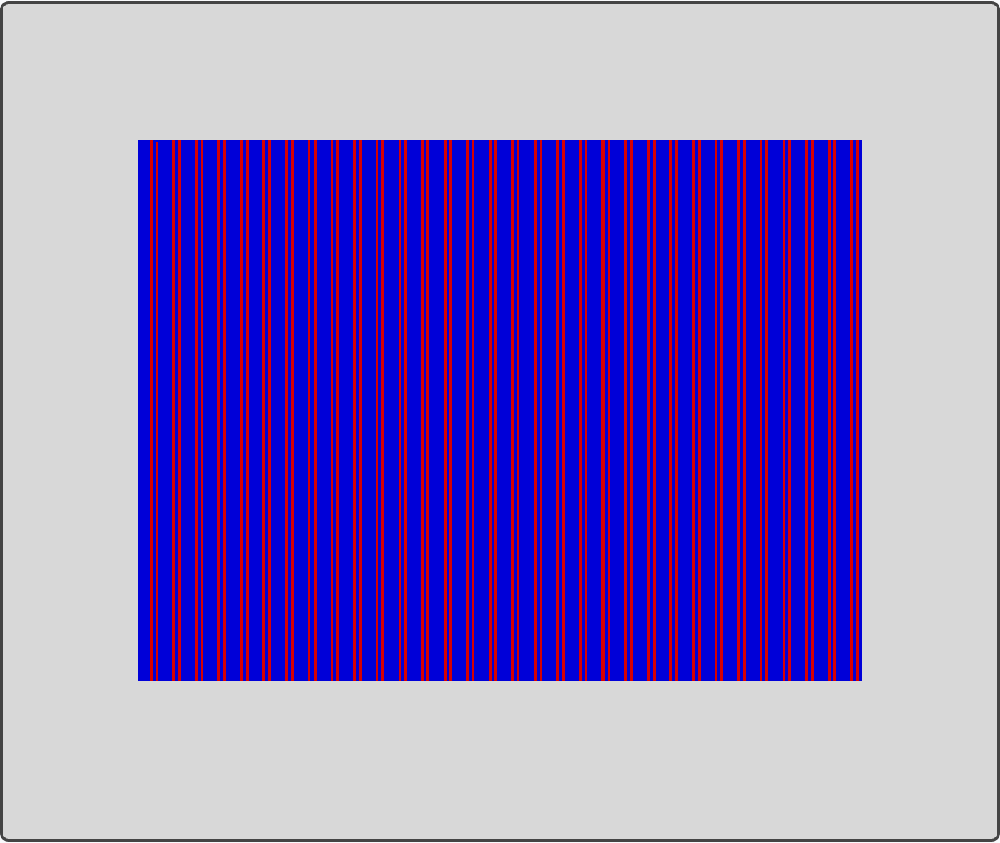
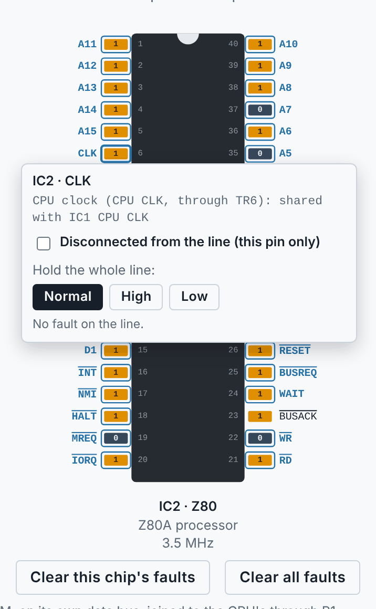
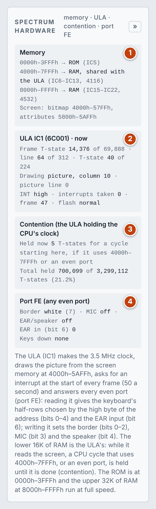
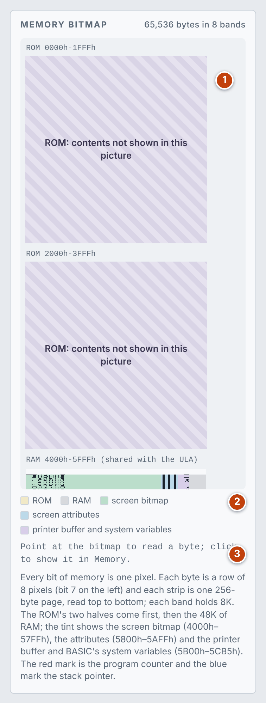

> LIST
ZX Spectrum 48K documentation
How to use the emulator, and how the machine it models is put together. The numbers in each list match the numbered markers on the screenshot above it.
User guide
The emulator is Z80 Bench with a Sinclair ZX Spectrum 48K (the issue 4A/4B board) built around the CPU from the machine's circuit diagram. Everything Z80 Bench does still works here; this guide covers what the machine adds, and points to the Z80 Bench documentation for the shared debugging tools.
Quick start
- Press Load ROM… and choose your own 48K ROM image (16,384 bytes). It is Sinclair's and is not included. Your browser keeps it, so you only load it once; the standard ROM is recognised by its CRC, DDEE531F.
- The machine switches on and shows
© 1982 Sinclair Research Ltd. - Click the picture and type. Keywords come from single keys, as on the real machine: at the K cursor, P gives PRINT and J gives LOAD.
- To load a tape, press Insert tape and choose a
.tap,.tzxor.wavfile (or a.zipholding one), typeLOAD ""and Enter, then press Play.
The page

- Toolbar: reset, master reset, clock, step, run and speed, as in Z80 Bench.
- Screen: the television picture, the ROM, snapshot and tape controls, and the keyboard.
- Processor and ULA: the Z80 and the ULA with live pins.
- Chips and faults: every chip on the board, with live pins and a fault menu on each pin.
- Program: assemble or type hex and load it into memory.
- I/O ports: the last value written to each port, and a log of the port reads and writes (reads of port FE, the keyboard, are left out).
- Disassembly with breakpoints.
- Memory: a hex view of the 64K the CPU sees.
- Memory bitmap: every bit of memory as a pixel.
- Registers and register stops.
- Debug: stops of every kind, and the faults that are set.
- Bus timing of the current instruction, clock by clock.
- Spectrum hardware: where the ULA is in the frame, contention and port FE.
The screen, the keyboard and the cassette

PRINT "Z80 Bench on the ZX Spectrum" and BORDER 1, paused: the white line and red mark show where the beam is. The deck holds a SAVE recorded on the page.- The picture: 352 by 296 dots: the 256 by 192 of the screen with 48 dots of border at each side, 48 lines above and 56 below. It is built as the ULA builds it, cell by cell from the screen memory at the moment each cell is drawn (see Video). While the machine is paused, a white line and a red mark show where the beam is. Click the picture to give it the keyboard.
- Beam position: the line of the frame (0 to 311), the T-state in the line (0 to 223) and the number of frames drawn.
- Load ROM…: takes a 16,384-byte ROM image; any other size is refused. The message gives its CRC32.
- Power on / restart: clears the RAM, resets the CPU and runs in real time, as if the machine had been switched off and on.
- Load snapshot…: see Snapshots.
- Save snapshot (.sna): see Snapshots.
- Sound: the beeper on or off (see Sound and contention). The choice is remembered.
- Contention: untick it to run the machine without the ULA holding the CPU (see Sound and contention).
- Insert tape: a TAP or TZX file, a WAV recording of a cassette, or a
.zipholding one of them. The page says how many blocks it holds and how long the tape is. A WAV file is turned into pulses (the edges are found after the DC drift is removed, with a threshold that follows the signal and stays above the hiss); the tape blocks in it in the ROM's format are listed, and Save tape keeps it as a TZX file. - Play: PLAY on the deck. While it is down the tape moves with the machine's time and its signal reaches EAR (bit 6 of port FE), so the ROM's loader and the loaders of games read it bit by bit, with the loading stripes in the border. A "stop the tape" block in a TZX file releases it. Press it again to stop.
- Rewind to the start of the tape.
- Record: records what the computer writes to MIC (bit 3 of port FE). Press it, type
SAVE "name", press a key when the Spectrum says "Start tape", and press Stop recording when it says0 OK. The recording becomes the tape in the deck, rewound: as a TAP file when every block in it is in the ROM's format, otherwise as a TZX file of pulses. - Save tape: downloads the tape in the deck (
.tapor.tzx). - Save .wav: downloads the tape's signal as sound (44.1 kHz, 8-bit, mono), to play into a real Spectrum's EAR socket.
- Block: the blocks on the tape with their start times; choosing one winds the tape to it. The line under the buttons follows the tape as it plays.
- Instant loading: when the ROM's loader (LD-BYTES, at 0556h) is about to read a block, the next block is taken straight from the tape file, checked as the ROM would check it (its flag byte, its length and its checksum), copied into memory and the tape wound past it, with no waiting. Programs with loaders of their own do not use LD-BYTES and still load from the signal, so keep PLAY down. After an instant load the tape stops by itself once nothing has read it for 2 seconds. The choice is remembered.
- Fast loading: runs at full speed while a loader is reading the playing tape (more than 200 reads of port FE in a frame within the last half second; the keyboard takes at most 8) or while
SAVEwrites to a recording, then back to real time. - Tape: the tape's name, the block under the head, the time and PLAY's state, or the recording's length.
- Keyboard: the 48K's forty keys. Each shows the keyword it gives at the K cursor above it (on the digits, the CAPS SHIFT function), the SYMBOL SHIFT symbol in red and the extended-mode word in green below. CAPS SHIFT and SYMBOL SHIFT stay down for the next key.
On your own keyboard, characters come out as typed: the page presses the Spectrum keys that give each one, so " is SYMBOL SHIFT and P, and a capital letter is CAPS SHIFT and the letter. Shift is CAPS SHIFT, Ctrl or Alt is SYMBOL SHIFT, Backspace is DELETE (CAPS SHIFT and 0), the arrow keys are CAPS SHIFT and 5 to 8, and Esc is BREAK (CAPS SHIFT and SPACE). Presses are queued and each is held for at least 1.2 frames, so that the ROM, which reads the keyboard once a frame, sees every one however fast you type.
Snapshots
Load snapshot… takes a 48K .sna file (49,179 bytes) or a .z80 file of version 1, 2 or 3 made for a 48K machine (a snapshot of a 128K is refused), or a .zip holding one, and runs it at once. Save snapshot (.sna) saves the machine as a 48K .sna file, between two instructions (step to the end of an instruction first if you are clocking T-states).
Sound and contention
The speaker follows bit 4 of port FE, with a little of bit 3 (MIC) and of the tape's signal, as they share the ULA's MIC/EAR pin. It plays only while the machine runs in real time; browsers let it start only after a click or a key press.
With Contention ticked (the normal state), the ULA holds the CPU's clock whenever both want the lower 16K of RAM at once, as on the real machine. Untick it and every access runs at full speed: programs whose timing depends on contention (border effects, some loaders and music) then run differently, which shows what the real machine's timing does.
Processor and ULA

- IC2, the Z80A, with every pin live, as in Z80 Bench. Its input pins (INT, NMI, WAIT, BUSREQ, RESET) toggle when clicked, as in Z80 Bench; their faults are in the Chips and faults panel. Clicking CLK pulses one clock.
- IC1, the ULA (6C001), with its pins numbered as on the issue 4A/4B diagram. INT, the control lines, A14, A15, ROMCS, the keyboard lines and MIC/EAR follow the machine on every clock. The CPU CLK pin stays high while the ULA holds the clock. The lower RAM's pins (RAS, CAS, WE, A0–A6, D0–D7) show whoever uses that RAM at each T-state: the ULA reading the screen, or the CPU (see Video). They are shown T-state by T-state, not edge by edge. U, V and Y are the analogue colour outputs and show ~; OSC follows the clock.
- Legend: high, low, floating (Z) or analogue (~), and the inputs you can click.
- Bus read-out: the machine cycle and T-state, and what is on the address and data buses. A T-state held by the ULA is marked "clock held by the ULA".
Bus timing: the held clock

LD (4000h),A at 6000h, in the lower RAM, while the picture is drawn: it takes 26 T-states instead of 13.- TH: a T-state in which the ULA holds the CPU's clock before a cycle can start. On the Spectrum the ULA stops the clock rather than using WAIT, so the Z80's WAIT pin stays high.
Chips and faults

- Processor and ULA: IC2 and IC1.
- ROM: IC5, 16K.
- Lower RAM: IC6 to IC13, eight 4116s, one per data bit, D0 to D7 in order. This is the ULA's RAM.
- Upper RAM: IC15 to IC22, eight 4532s, D0 to D7 in order. A tile's dot lights while its chip is being used; a chip with a fault turns red.
- The chosen chip's pins, live on every clock. Click a pin for its menu.
- The fault menu. For a pin on a line shared with other pins, the buttons hold the whole line high or low, and every pin on it sees that level, on every chip. Tick Disconnected from the line for a fault on this pin alone: an input then floats (reads high) or takes the level you choose; a disconnected output no longer drives the line. A pin on a line of its own has plain choices: normal, disconnected, high or low.
- The chip's faults, listed. Every fault also appears in the Debug panel, where it can be removed.
- Clear this chip's faults and Clear all faults.


What each fault does is set out in The board's lines and what faults do.
Spectrum hardware panel

- Memory: the memory map and which chips hold it.
- ULA: the T-state of the frame (of 69,888), the line and the T-state in the line, what is being drawn, whether INT is asking, how many interrupts were taken, the frame number and the flash phase.
- Contention: how many T-states a cycle starting now would be held, and how much of the time the CPU has been held since power on.
- Port FE: the border colour, MIC and the speaker as last written, the EAR bit as it reads now, the tape's level while it plays, and the keys down.
Memory bitmap

- The bands: the ROM in two bands of 8K, then the RAM in six. Each byte is a row of 8 pixels (bit 7 on the left) and each strip is one 256-byte page. The red mark is the program counter and the blue mark the stack pointer.
- The tint: the screen bitmap (4000h–57FFh), the attributes (5800h–5AFFh), and the printer buffer and BASIC's system variables (5B00h–5CB5h).
- Point at a byte to read its address, value and disassembly; click it to show it in the Memory panel.
The debugging tools
The remaining panels are Z80 Bench's own and work the same way here.
- Loading a program: the sample program loads at
8000hand paints the top row of the screen red. From BASIC, load it without Reset CPU after loading and typeRANDOMIZE USR 32768; typeCLEAR 32767first so BASIC keeps below 8000h - Disassembly and breakpoints
- Memory, with Dump memory (.bin) and Memory listing (.txt) for the 64K the CPU sees. A byte you edit in the ROM's range is not kept: the ROM cannot be written
- Registers and register stops
- Debug pane: memory, pin and bus stops, and the faults
- Bus timing: shows the T-states the ULA holds (above)
Hardware reference
The model follows Sinclair's circuit diagram of the issue 4A/4B board. Its timing has been checked against the Fuse emulator's Z80 test suite.
The machine
- IC1, the ULA (Ferranti 6C001): from a 14 MHz crystal it makes the CPU's 3.5 MHz clock and the 7 MHz dot clock; it draws the picture from the lower RAM, which it owns; it decodes the ROM's select (ROMCS) from A14, A15 and MREQ; it answers every even port; it asks for an interrupt once a frame; and it stops the CPU's clock while it needs the lower RAM. Its picture leaves as Y, U and V for the LM1889 encoder (IC14).
- IC2, the Z80A.
- IC5, the 16K ROM.
- IC6–IC13, eight 4116 dynamic RAMs (16K by 1): 4000h–7FFFh, D0 to D7. Their address pins carry a row (A0–A6) then a column (A7–A13), from the ULA, or from the CPU through the 74LS157 multiplexers IC3 and IC4 and 330 ohm resistors, so the ULA's own address wins when it reads the screen. Their data lines are the ULA's data bus, joined to the CPU's through 470 ohm resistors (R1–R8), so the ULA can read them while the CPU uses the ROM or the upper RAM.
- IC15–IC22, eight 4532s (half-good 4164s; link DK1 picks the half): 8000h–FFFFh, D0 to D7, addressed through the 74LS157s IC25 and IC26, with RAS, CAS and WRITE made by IC23 (74LS32) and IC24 (74LS00).
- R9–R16, 8K2 pull-ups on the CPU's data bus: a read that nothing answers gives FFh.
Lines, frames and the interrupt
- A line is 224 T-states: 128 for the 256 dots of the picture (two dots a T-state), 24 of right border, 48 of blanking and sync, and 24 of left border.
- A frame is 312 lines, 69,888 T-states: about 50.08 frames a second.
- The interrupt: INT is low for the first 32 T-states of every frame; if interrupts are enabled, the interrupt is taken before the first instruction that would start in that time.
- The picture starts 14,336 T-states after INT does, at line 64; it is 192 lines. Lines 0–15 are not kept in the emulator's picture; lines 16–63 are the top border and 256–311 the bottom.
Contention
While a line of the picture is drawn, the ULA reads the screen memory, and the CPU must wait for the lower RAM. From T-state 14,335 of the frame, for 128 T-states of each of the 192 lines, a CPU cycle that needs the ULA is held for 6, 5, 4, 3, 2, 1, 0 or 0 T-states, by where in each group of 8 T-states it starts. The ULA sees only the address, so it holds:
- a memory cycle (opcode fetch, read or write) to 4000h–7FFFh, held at its first T-state;
- an internal cycle of the Z80 that leaves such an address on the bus (after an opcode fetch, the refresh address, from I and R), held one T-state at a time;
- an I/O cycle to an even port (the ULA's), held at its second T-state; one with an address in 4000h–7FFFh is held at its first T-state as well, and if the port is odd, at each of its four.
The hold is worked out as each access happens, so every read and write takes place at its true T-state: the picture, the border and the floating bus see them when the real machine would. The points at which every instruction can be held agree with the 1,335 tests of the Fuse emulator's Z80 test suite.
Memory
- 0000h–3FFFh: the ROM. Writes there are ignored.
- 4000h–7FFFh: the lower RAM, shared with the ULA: the screen bitmap at 4000h–57FFh (6,144 bytes), the attributes at 5800h–5AFFh (768 bytes), then the printer buffer and BASIC's system variables from 5B00h.
- 8000h–FFFFh: the upper RAM.
Port FE, the keyboard and the floating bus
The ULA answers any port with A0 low (port FE). Written, bits 0–2 set the border colour, bit 3 MIC (the tape output) and bit 4 EAR (the speaker). Read, bits 0–4 are the keyboard (0 for a key down), bit 6 is the EAR input and bits 5 and 7 read 1. The keyboard is eight half-rows of five keys, each chosen by one of A8–A15 low; several can be read at once:
| Address line low | Bit 0 | Bit 1 | Bit 2 | Bit 3 | Bit 4 |
|---|---|---|---|---|---|
| A8 (FEFEh) | CAPS SHIFT | Z | X | C | V |
| A9 (FDFEh) | A | S | D | F | G |
| A10 (FBFEh) | Q | W | E | R | T |
| A11 (F7FEh) | 1 | 2 | 3 | 4 | 5 |
| A12 (EFFEh) | 0 | 9 | 8 | 7 | 6 |
| A13 (DFFEh) | P | O | I | U | Y |
| A14 (BFFEh) | ENTER | L | K | J | H |
| A15 (7FFEh) | SPACE | SYMBOL SHIFT | M | N | B |
- EAR: MIC, the speaker and the tape input share the ULA's MIC/EAR pin, and bit 6 reads that pin against a threshold. On issue 3 and later boards (the 4A/4B included) bit 6 reads 1 when the tape signal is high or bit 4 was last written as 1; bit 3 alone does not lift it.
- The floating bus: nothing answers an odd port, and the data bus holds what the ULA is reading for the picture at that moment: from T-state 14,338 of the frame, in each 8 T-states of a picture line, a bitmap byte, its attribute, the next bitmap byte and its attribute, then 4 T-states of nothing (FFh). Outside the picture an odd port reads FFh.
Video
- Cells: the picture is drawn in cells of 8 dots (4 T-states). For a cell of the screen, the bitmap byte and its attribute are read from the memory at the moment the cell is drawn; before the CPU writes to the screen or changes the border, the picture is drawn up to that moment. Border changes therefore show to the nearest cell.
- The screen's layout: line y (0–191) of the picture is at
4000h + (y AND C0h)·32 + (y AND 7)·256 + (y AND 38h)·4, 32 bytes a line; the attribute of character row r, column c at5800h + 32·r + c. - Attributes: bits 0–2 ink, bits 3–5 paper, bit 6 bright, bit 7 flash. Flash swaps ink and paper, changing every 16 frames.
- The ULA's reads: a bitmap byte and its attribute share the low 8 bits of their addresses, so one row address (A0–A6) serves both: the ULA reads them in page mode, two reads under one RAS. On the ULA's and the lower RAM's pins, those T-states show RAS and CAS low, the byte's column on A0–A6 and the byte on D0–D7.
Cassette
- The ROM's format: a leader of pulses of 2,168 T-states (8,063 of them before a header, 3,223 before data), two sync pulses of 667 and 735, then each bit as two equal pulses, 855 T-states for a 0 and 1,710 for a 1. A block is a flag byte (00h for a header, FFh for data), the bytes, and a checksum (all of them XORed).
- TZX blocks understood: standard and turbo speed data, pure tones, pulse sequences, pure data, direct recordings, pauses and "stop the tape", groups, jumps and loops, and text descriptions (shown as notes). Archive information is skipped; blocks of type 18h and 19h are skipped with a note.
- Recording: the times between the edges of MIC while REC is down. Blocks in the ROM's format are found in them (a steady leader, two short sync pulses, then pairs of pulses, kept only if the checksum is right).
The board's lines and what faults do
The lines a fault can hold, from the diagram:
- A0–A15: the CPU's address bus, to the ROM (A0–A13) and the ULA (A14, A15).
- D0–D7 on the CPU's side: the Z80, the ROM and the upper RAM chips.
- D0–D7 on the ULA's side: the ULA and the lower RAM chips (each through its resistor, R1–R8).
- The lower RAM's A0–A6, RAS, CAS and WE (the ULA's pins and the eight 4116s), and the upper RAM's A0–A7, RAS, CAS and WE (the eight 4532s).
- INT, the CPU clock, ROMCS, MREQ, IORQ, RD and WR between the ULA and the Z80 (ROMCS to the ROM's CE).
- Every other pin, such as the keyboard lines, MIC/EAR, M1 and the Z80's inputs, is a line of its own.
What they do:
- A data line held on the CPU's side spoils what the CPU reads and writes; on the ULA's side, it spoils the picture and what the CPU reads from the lower RAM and from port FE.
- A RAM or ROM data pin held or disconnected spoils that bit of what the chip stores and gives. A chip whose RAS or CAS is held or disconnected (or the ROM whose CE is held high) is out of circuit: its bits read 1 and writes to it are lost. A write enable held high loses the writes.
- An address line held moves every access that crosses it. On a RAM chip's multiplexed address pin, a fault changes both the row bit and the column bit it carries: on the lower RAM, pin An carries An and An+7.
- The ULA's A14 and A15 decide, as the ULA sees them, whether it selects the ROM, whether the lower RAM answers and whether a cycle is held. Two chips answering at once give the AND of their bytes; none gives FFh.
- MREQ, IORQ, RD or WR held high cut off the memory or I/O cycles that need them: a read gives FFh and a write is lost. Held low they are not modelled.
- INT held high stops the interrupts (and so the keyboard scan and the clock in BASIC); held low, the CPU is interrupted whenever interrupts are enabled.
- The CPU clock held: the Z80 stands still; the ULA goes on drawing the picture.
- A keyboard line held low reads as a key down in every half-row; MIC/EAR held fixes bit 6 and the speaker.
Two things the diagram leaves open are filled in here. The multiplexers IC25 and IC26 are drawn without showing which CPU address lines go to the upper RAM's row and which to its column: A0–A7 are taken as the row and A8–A14 as the column (this decides only which addresses an upper RAM address fault moves). And the diagram contradicts itself on the ROM's pin 27: the row of pin numbers over the chip gives it as A12, the box inside the chip as a chip select. The ROM is drawn with the row of numbers, ROMCS on pin 20 (CE) and OE taken as tied low.
What is not emulated yet
- Other models and boards: the 16K, the issue 1 to 3 boards (their EAR threshold differs) and the 128K machines.
- The ULA's edges within a T-state, its analogue outputs, and the "snow" some programs cause by pointing the I register at 4000h–7FFFh.
- MREQ, IORQ, RD or WR held low, and a ROM selected all the time.
- The ULA itself, gate by gate: it is modelled by its behaviour. A gate-level model from Ferranti's logic diagrams of the 6C001, as for the ZX81's ULA, is planned.
- Peripherals: joysticks, the printer, the Interface 1 and microdrives.